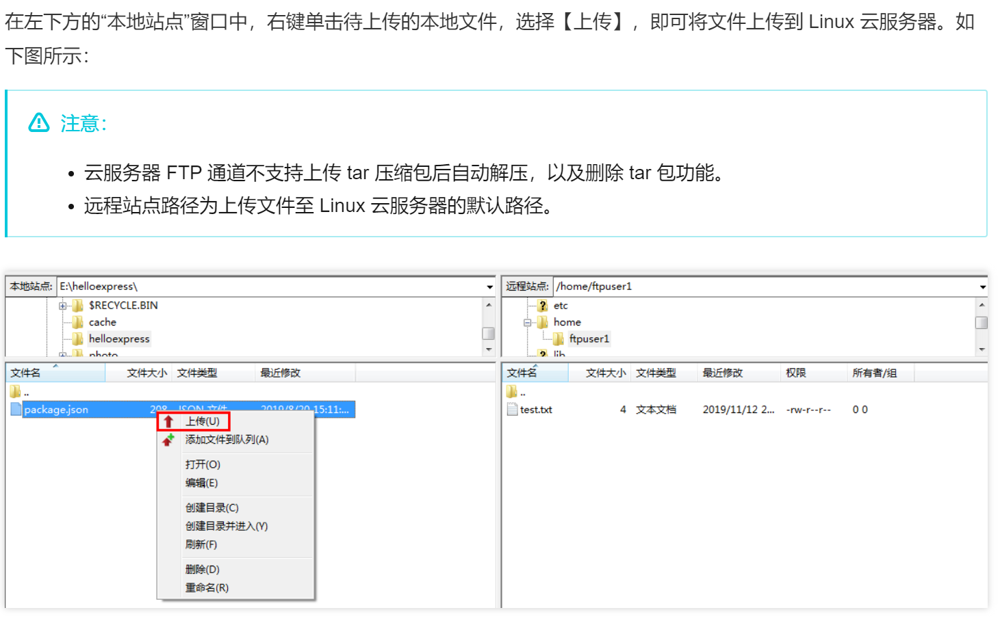
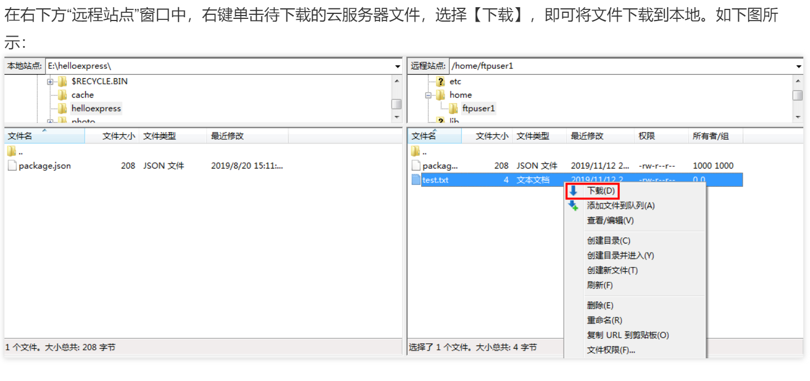

Linux与Windows文件交互
云主机 Linux 与 Windows 的文件交互¶
环境： 本机： win10 云主机： 腾讯云主机 ubuntu 18.04.4 LTS
1 连接云主机¶
打开
windows powershell用 ssh 进行远程连接：ssh ID@Public_IP,输入密码切换 user : su - username , 输入密码
2 采用 ftp 服务器进行文件交互¶
2.1 云主机搭建 ftp 服务器¶
- 不同的 Linux 系统采用的搭建方式有所差异，可根据对应的相关教程，本文以 unbuntu 为例
更新： sudo apt-get update
安装： sudo apt-get install vsftpd
启动： sudo service vsftpd start
查看状态： sudo service vsftpd status

关闭: sudo service vsftpd stop
2.2 配置服务文件¶
配置文件： sudo vim /etc/vsftpd.conf
追加（ GG 可以定位到最后一行）：
1 2 3 4 5 | |
若后面出现了 550 Peimission Denied 的错误 需要在 conf 文件反注释掉以下这行： write_enable=YES （在 vim 中可以通过 /wri 等命令匹配定位）
新建文件： sudo vim /etc/allow_users，加入自己的 username
检查文件： sudo vim /etc/ftpushers ,这里记录的是不能访问 ftp 服务器的名单，若有自己的用户名则删掉
2.3 验证服务器是否搭建成功¶
(1) 在 cmd 输入 ftp Public_IP
(2) 在windows 资源管理器的地址栏输入 ftp://Public_IP
若出现需要输入用户名和密码的界面，则搭建成功
踩坑记录：
若出现权限不够的情况，打开：
控制面板 -> Internet 选项 -> 高级 -> 去掉“使用被动 ftp ”的勾 -> 重启 ftp 服务器

2.4 windows 本地端使用 ftp 进行通信¶
在 windows 本地端中，可以下载并使用工具 FileZilla 即可

上传文件：

下载文件：

3 采用 scp 进行文件交互¶
scp 命令一般是用在 linux 传 linux 的情况下
若是 windows ，只需要在 powershell 中使用即可,路径尽可能用桌面 desktop/ ,用其他的可能会报错
上传文件：
scp 本地文件地址 云服务器帐号@云服务器实例公网 IP/域名:云服务器文件地址
例如，您需要将本地文件 /home/lnmp0.4.tar.gz 上传至 IP 地址为 129.20.0.2 的云服务器对应目录下，则执行的命令如下：
scp /home/Inmp0.4.tar.gz root@129.20.0.2:/home/Inmp0.4.tar.gz
下载文件
scp 云服务器帐号@云服务器实例公网 IP/域名:云服务器文件地址 本地文件地址
例如，您需要将 IP 地址为 129.20.0.2 的云服务器文件 /home/lnmp0.4.tar.gz 下载至本地对应目录下，则执行的命令如下：
scp root@129.20.0.2:/home/Inmp0.4.tar.gz /home/Inmp0.4.tar.gz